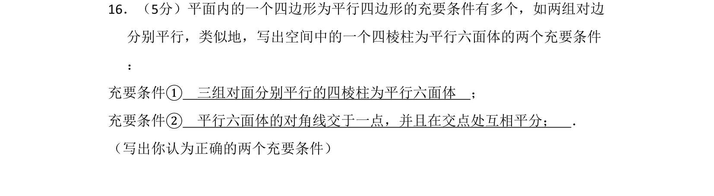
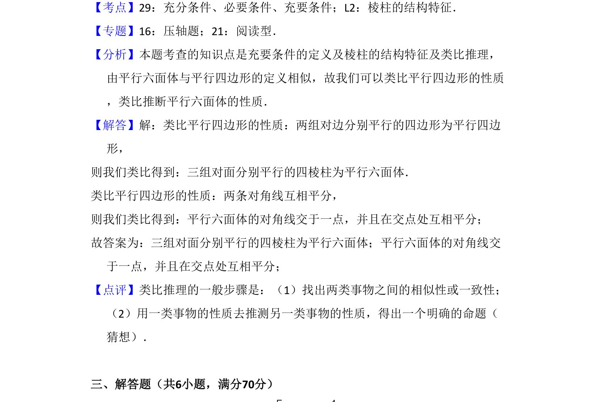

考点：立体几何 类比推理

类比平行四边形充要条件，写出空间四棱柱为平行六面体的两个充要条件，考查类比推理。

📄 原 PDF 第 9 页：
素材/真题/吉林/2008-2024·（吉林）数学高考真题/2008年高考数学试卷（文）（全国卷Ⅱ）（解析卷）.pdf
16．（5分）平面内的一个四边形为平行四边形的充要条件有多个，如两组对边 分别平行，类似地，写出空间中的一个四棱柱为平行六面体的两个充要条件 ： 充要条件① 三组对面分别平行的四棱柱为平行六面体 ； 充要条件② 平行六面体的对角线交于一点，并且在交点处互相平分； ． （写出你认为正确的两个充要条件）
【考点】29：充分条件、必要条件、充要条件；L2：棱柱的结构特征．菁优网版权所有 【专题】16：压轴题；21：阅读型． 【分析】本题考查的知识点是充要条件的定义及棱柱的结构特征及类比推理， 由平行六面体与平行四边形的定义相似，故我们可以类比平行四边形的性质 ，类比推断平行六面体的性质． 【解答】解：类比平行四边形的性质：两组对边分别平行的四边形为平行四边 形， 则我们类比得到：三组对面分别平行的四棱柱为平行六面体． 类比平行四边形的性质：两条对角线互相平分， 则我们类比得到：平行六面体的对角线交于一点，并且在交点处互相平分； 故答案为：三组对面分别平行的四棱柱为平行六面体；平行六面体的对角线交 于一点，并且在交点处互相平分； 【点评】类比推理的一般步骤是：（1）找出两类事物之间的相似性或一致性； （2）用一类事物的性质去推测另一类事物的性质，得出一个明确的命题（ 猜想）． 三、解答题（共6小题，满分70分）